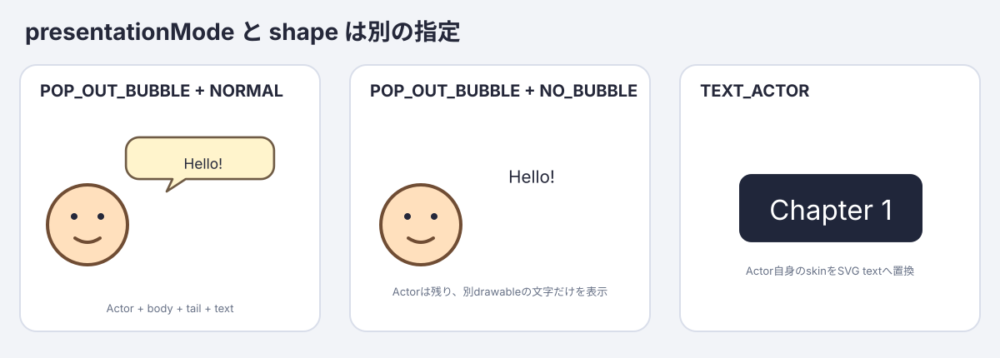

TurboWarp Bubble Block Manual
This manual explains how to use turbowarp-bubble as an unsandboxed TurboWarp custom extension. A Bubble combines an SVG body, text, a character portrait, blinking and lip-sync layers, and an animated advance indicator.

1. Load the required extensions
The complete input-wait example uses five extensions. Add Temporary Variables from TurboWarp's extension library, then load the four custom extensions with Run without sandbox enabled. Async Input and Runtime Expression are needed only for the integrated wait block. Asset Manager is needed only when a style uses portrait or advance-frame image assets. Bubble includes its SVG Text engine; do not load SVG Text separately.
| Order | Extension | URL |
|---|---|---|
| 1 | Temporary Variables | Add from the TurboWarp extension library |
| 2 | Async Input 0.3.0 | https://cdn.jsdelivr.net/npm/@kubohiroya/turbowarp-async-input@0.3.0/dist/async-input.js |
| 3 | Runtime Expression 0.3.0 | https://cdn.jsdelivr.net/npm/@kubohiroya/turbowarp-runtime-expression@0.3.0/dist/runtime-expression.js |
| 4 | Asset Manager 0.7.0 | https://cdn.jsdelivr.net/npm/@kubohiroya/turbowarp-asset-manager@0.7.0/dist/asset-manager.js |
| 5 | Bubble 0.2.0 | After npm publication: https://cdn.jsdelivr.net/npm/@kubohiroya/turbowarp-bubble@0.2.0/dist/turbowarp-bubble.js |
To try a development build, load this repository's dist/turbowarp-bubble.js as a local custom extension. Bubble reports an explicit error if Asset Manager is missing when an image layer is used, or if Async Input or Runtime Expression is missing when it starts a Bubble wait.
See also:
2. Prepare portrait assets
The following example stores costumes in a hidden asset sprite named Assets.
| Costume | Asset Manager name | Contents |
|---|---|---|
HeroFace |
HeroFace |
Face, hair, and outline, excluding the animated eyes/mouth |
HeroEyesOpen |
HeroEyesOpen |
Transparent overlay containing only the open eyes |
HeroEyesClosed |
HeroEyesClosed |
Transparent overlay containing only the closed eyes |
HeroMouthClosed |
HeroMouthClosed |
Transparent overlay containing only the closed mouth |
HeroMouthOpen |
HeroMouthOpen |
Transparent overlay containing only the open mouth |
Next1 |
Next1 |
First frame of the advance indicator |
Next2 |
Next2 |
Second frame of the advance indicator |
Use the same canvas size and center point for the base, eye, and mouth images. Keep overlay backgrounds transparent; mismatched canvases or centers make the layers drift when composed.
Register each costume with Asset Manager:
register resource [costume:Assets:HeroFace] as asset [HeroFace]
register resource [costume:Assets:HeroEyesOpen] as asset [HeroEyesOpen]
register resource [costume:Assets:HeroEyesClosed] as asset [HeroEyesClosed]
register resource [costume:Assets:HeroMouthClosed] as asset [HeroMouthClosed]
register resource [costume:Assets:HeroMouthOpen] as asset [HeroMouthOpen]
register resource [costume:Assets:Next1] as asset [Next1]
register resource [costume:Assets:Next2] as asset [Next2]
For a remote image, pass its HTTPS URL as RESOURCE_ID. Bubble accepts only assets already registered with Asset Manager whose MIME type is image/*.
3. Define a text style
Bubble uses Builder blocks to define a named style without a single oversized block.
begin text style [dialogue-text]
set text background color [#fff4cc]
set text color [#332200]
set text font [Noto Sans JP]
set text size [100] %
set text align [left]
save text style
begin creates or replaces the draft owned by the current TurboWarp execution thread. Concurrent scripts and clones therefore cannot overwrite each other's draft. save stores an immutable named style and clears that thread's draft. Starting another draft in the same script or starting/stopping the project discards its unsaved changes. Text and Bubble styles are runtime state, so normally define them again whenever the green flag is clicked.
4. Define a Bubble style
First associate a Bubble style name with an SVG Text style name.
define bubble style [hero-dialogue] using text style [dialogue-text]
set presentation mode [POP_OUT_BUBBLE] for bubble style [hero-dialogue]
set bubble placement [up-right] for bubble style [hero-dialogue]
set bubble distance [12] for bubble style [hero-dialogue]
set bubble visual style [NORMAL] for bubble style [hero-dialogue]
set bubble tail length [18] for bubble style [hero-dialogue]
set bubble offset x [0] y [0] scale [100] % for bubble style [hero-dialogue]
Presentation mode

presentationMode and the SVG body shape are independent.
| Presentation mode | Shape | Result |
|---|---|---|
POP_OUT_BUBBLE |
NORMAL or another body |
A separate Bubble drawable while the actor stays visible |
POP_OUT_BUBBLE |
NO_BUBBLE |
Separate text without a body or tail |
TEXT_ACTOR |
Not applicable | Replace the actor's own rendering with responsive SVG text |
For a text actor, either select TEXT_ACTOR on a Bubble style and run say/think, or use the direct blocks:
set this sprite text [Chapter 1] with text style [dialogue-text]
clear this sprite text
TEXT_ACTOR does not accept placement, distance, tail, offset, visual shape, portrait, or advance-indicator settings. Bubble reports incompatible combinations instead of ignoring them. Clearing the text actor releases the generated SVG skin and reapplies the sprite's current costume.
Actor-relative and stage-relative placement

Each of the 16 actor-relative directions is shown as a complete mini-scene containing an actor, Bubble body, tail, and text. The two tail-base points lie on the body border. The renderer uses a JSClipper union to produce a single path, so no internal border remains at the join.
The three stage-relative diagrams show the Stage frame, safe area, Bubble dimensions, horizontal centerline, and relevant reference edge or center. The diagrams and the TurboWarp drawable are generated by the same shared renderBubbleSvg implementation.
Actor-relative placement specifies the direction from the actor's center toward the center of the entire Bubble. The menu provides these 16 canonical directions:
up / up-up-right / up-right / right-up-right
right / right-down-right / down-right / down-down-right
down / down-down-left / down-left / left-down-left
left / left-up-left / up-left / up-up-left
Compass aliases such as north, north-northeast, and northeast may also be typed directly or supplied by a reporter. A number uses Scratch direction semantics from 0 through 360 degrees: 0 is up, 90 right, 180 down, 270 left, and 360 normalizes to 0. Arbitrary angles are not rounded to the 16 menu directions. The default is up-right.
Stage-relative placements do not point at an actor and are positioned within the Stage safe area.
| Placement | Position |
|---|---|
HEADER_LIKE |
Top of the Stage safe area, centered |
CENTER |
Horizontal and vertical center of the Stage |
FOOTER_LIKE |
Bottom of the Stage safe area, centered |
These placements do not depend on actor coordinates, bounds, or visibility. Use one of them when running say or think from the Stage. A stage-relative Bubble has no actor-pointing tail.
Actor distance, tail, body offset, and scale

distance(default12) is the gap between the actor bounds and the tail tip. Actor bounds means the axis-aligned bounding box (AABB) of the rendered actor in Stage coordinates.tail length(default18) is the nominal distance from the Bubble border to the tail tip at the normal position.offset x/y/scale(default[0, 0, 100]) uses positive x to the right, positive y upward, and scale as a percentage.[10, -10, 120]moves the body 10 right and 10 down, then scales it to 120%.
Scale applies to the body, SVG Text, portrait base, blink/lip-sync layers, advance indicator, and internal padding as one unit, so the displayed font size scales by the same factor. When scale alone changes, the body center moves away from the actor by the increase in radius, preserving the actor-side gap. The x/y offset is added afterward. The tail tip remains fixed and the union with the body border is regenerated, so an offset can change the effective tail length.
Near a Stage edge, keeping the scaled Bubble on-screen takes priority and can reduce the requested distance. Actor-relative distance, tail, offset, and scale settings do not apply to HEADER_LIKE, CENTER, or FOOTER_LIKE.
Width, automatic wrapping, and Japanese line-breaking rules

The diagram is generated by running the production wrapText implementation. @cto.af/linebreak supplies Unicode UAX #14 break opportunities, which are filtered against Intl.Segmenter grapheme boundaries. The renderer then chooses the last candidate that fits the measured width. It avoids unnatural breaks before punctuation, closing brackets, small kana and prolonged sound marks, and inside a combined emoji grapheme.
Bubble visual styles

Available shapes are NORMAL, THINKING, DREAMING, YELLING, OFF_PANEL, WAVY, WHISPERING, ANNOUNCEMENT, NARRATION, and NO_BUBBLE.
set bubble visual style [YELLING] for bubble style [hero-dialogue]
The diagram and TurboWarp drawable both use Bubble's shared renderBubbleSvg function. Shapes with triangular tails use a platener/jsclipper union between the body and tail. THINKING and DREAMING use circular trails and are excluded from that union. Actor-relative placement points the tail toward the actor; stage-relative placement has no tail. NO_BUBBLE hides the body drawable and displays only text, portrait, and other layers.
The default visual style is NORMAL. The body drawable is created before text and portrait drawables so it remains behind them. close this bubble, target/clone disposal, and runtime disposal release the body drawable and its owned SVG skin.
NEGATIVE is not a separate style because it can be expressed with fill and border colors. Orientation and segments are also not public inputs; dimensions are calculated from width, font, character count, and the number of lines after wrapping.
Now configure the portrait and advance animation layers:
set portrait base [HeroFace] for bubble style [hero-dialogue]
set blink frames [HeroEyesOpen,HeroEyesClosed]
every [0.4] seconds for bubble style [hero-dialogue]
set talk frames [HeroMouthClosed,HeroMouthOpen]
every [0.1] seconds for bubble style [hero-dialogue]
set advance frames [Next1,Next2]
every [0.2] seconds for bubble style [hero-dialogue]
ASSETS is a comma-separated list of Asset Manager names. Surrounding whitespace is removed; commas cannot be part of an asset name.
- Blink and talk animations accept one or more frames. A single frame remains static.
- Use two or more advance frames so the loop is visible.
SECONDSmust be a finite number greater than zero.- An empty
ASSETSinput removes that animation. - An empty portrait base removes the whole portrait.
5. Show dialogue and wait for input
say and think show a Bubble immediately, continue to the next block, and begin in talking animation mode.
set runtime variable [input] to []
listen for key [Space] set runtime var [input] to [pressed]
listen for touch on this sprite set runtime var [input] to [pressed]
say [Let's head for the sea!] with bubble style [hero-dialogue]
wait with this bubble until condition [input == "pressed"] or timeout after [10] seconds
close this bubble
Initialize input with Temporary Variables before registering the Async Input listeners. The listeners update that runtime variable when Space is pressed or the sprite is tapped. The Bubble wait delegates input == "pressed" to Runtime Expression immediately and once per VM frame. While waiting it automatically enters awaiting-advance, stops lip-sync, and loops the images configured by set advance frames. When the condition becomes true or the timeout expires, it enters idle and continues to close this bubble. Set the timeout to 0 to wait without a timeout.
Reset input to an empty string before each later wait; otherwise the previous pressed value makes the next condition succeed immediately. Starting another Bubble, closing it, stopping its target, restarting or stopping the project, and disposing the runtime all cancel the target-owned wait and release its listener and timer.
When combining Bubble with audio or a separate text-reveal system, switch to awaiting-advance when that process completes.

If animated GIF playback is unavailable, use this static animation-mode comparison:

6. Bubble animation modes
| Mode | Blink | Lip-sync | Advance frames | Typical use |
|---|---|---|---|---|
talking |
Runs | Runs | Hidden | Dialogue display or audio playback |
awaiting-advance |
Runs | Stops/hidden | Loops | Await the user's request to advance |
idle |
Runs | Stops/hidden | Stops/hidden | Keep a Bubble visible and still |
set this bubble animation mode [MODE] changes only the Bubble owned by the calling sprite, clone, or Stage. It reports an error if that target has not first run say or think.
7. say and think
say [MESSAGE] with bubble style [STYLE]
think [MESSAGE] with bubble style [STYLE]
Both blocks support the same visual styles, portrait layers, placement, and animation-mode control. The block name does not force a shape; explicitly choose NORMAL, THINKING, or another shape with set bubble visual style. The Composition API surface still receives a say/think kind, so a custom host can add its own kind-dependent behavior.
Running a new say or think on the same sprite, clone, or Stage disposes the previous Bubble and its timers/drawables before replacing it. The Stage supports stage-relative placement only.
8. Using Bubble with clones
Bubble style definitions are shared within the extension, but each sprite or clone owns its currently displayed Bubble.
- Define assets and styles once from the original sprite when the green flag is clicked.
- Run
sayorthinkfrom each clone itself. - Change the animation mode and close the Bubble from the same clone that displayed it.
When a clone stops or is deleted, timers, SVG Text skins, and renderer drawables owned by that target are released automatically.
9. Block reference
| Block | Description |
|---|---|
begin text style [STYLE] |
Start or replace the current text-style draft |
set text font/size/color/background/align ... |
Decorate the current text-style draft |
save text style |
Save the named style and clear the draft |
define bubble style [STYLE] using text style [TEXT_STYLE] |
Define or redefine a Bubble style |
set presentation mode [MODE] for bubble style [STYLE] |
Select POP_OUT_BUBBLE or TEXT_ACTOR |
set bubble placement [PLACEMENT] for bubble style [STYLE] |
Set an actor direction/angle or a stage-relative region |
set bubble distance [DISTANCE] for bubble style [STYLE] |
Set the distance from actor bounds to the tail tip |
set bubble visual style [VISUAL_STYLE] for bubble style [STYLE] |
Select one of ten SVG body shapes |
set bubble tail length [LENGTH] for bubble style [STYLE] |
Set the nominal border-to-tip tail length |
set bubble offset x [X] y [Y] scale [SCALE] % for bubble style [STYLE] |
Set body position and whole-Bubble scale, including text |
set portrait base [ASSET] for bubble style [STYLE] |
Set the portrait base image |
set blink frames [ASSETS] every [SECONDS] seconds for bubble style [STYLE] |
Set blink overlays and interval |
set talk frames [ASSETS] every [SECONDS] seconds for bubble style [STYLE] |
Set lip-sync overlays and interval |
set advance frames [ASSETS] every [SECONDS] seconds for bubble style [STYLE] |
Set the animation shown during awaiting-advance |
say [MESSAGE] with bubble style [STYLE] |
Start or replace a say Bubble in talking mode |
think [MESSAGE] with bubble style [STYLE] |
Start or replace a think Bubble in talking mode |
set this sprite text [TEXT] with text style [STYLE] |
Replace this sprite's rendering with SVG text |
clear this sprite text |
Release SVG text and restore the current costume |
set this bubble animation mode [MODE] |
Select talking, awaiting-advance, or idle for this Bubble |
wait with this bubble until condition [CONDITION] or timeout after [TIMEOUT] seconds |
Await a Runtime Expression condition or optional timeout |
close this bubble |
Release this target's Bubble and owned resources |
Bubble version |
Report the Bubble implementation version |
10. Troubleshooting
| Symptom | Cause and solution |
|---|---|
| Asset Manager required error | Load Asset Manager 0.7.x without sandbox |
| Async Input required error | Load Async Input 0.3.x without sandbox before using the Bubble wait |
| Runtime Expression required error | Load Runtime Expression 0.3.x without sandbox before using the Bubble wait |
bubble style is not defined |
Run define bubble style first, including after restarting with green flag |
Text style is not defined |
Run the matching begin / decorators / save text style sequence first |
| Image asset is not registered | Wait for register resource ... as asset ... before showing the Bubble |
| Asset is not an image | Confirm MIME type of asset [NAME] is image/* |
| Only one advance frame | Supply at least two frames, or clear the setting |
| Frame interval error | Use a finite SECONDS value greater than zero |
| Actor-relative Bubble from the Stage | Use HEADER_LIKE, CENTER, or FOOTER_LIKE |
TEXT_ACTOR does not accept... |
Remove popup-only decorators from that style or use POP_OUT_BUBBLE |
| Invalid placement | Use a 16-way direction, alias, 0–360 degree angle, or stage-relative value |
| Eyes or mouth are misaligned | Match canvas size, center, and transparent area across all portrait layers |
11. Automatic cleanup
Bubble automatically releases its owned timers, SVG Text skins, and renderer drawables when:
close this bubbleruns;- the same sprite or clone runs another
sayorthink; - the target sprite or clone stops;
- the green flag starts the project;
- the whole project stops; or
- the TurboWarp runtime is disposed.
Assets registered with Asset Manager are not owned by Bubble. To remove an unused registered image from memory, close the Bubble first and then use Asset Manager's delete asset [NAME] from memory block.
12. Regenerating the manual assets
The diagrams and GIF are generated from scripts in this repository. GIF generation requires the ImageMagick magick command.
pnpm docs:render
pnpm docs:check
docs:check verifies SVG viewBoxes, production-renderer and wrapText markers, every visual style, the GIF dimensions/frame count/loop setting, references to all images and 16 blocks in both language manuals, and that the generated GitHub Pages HTML is current.